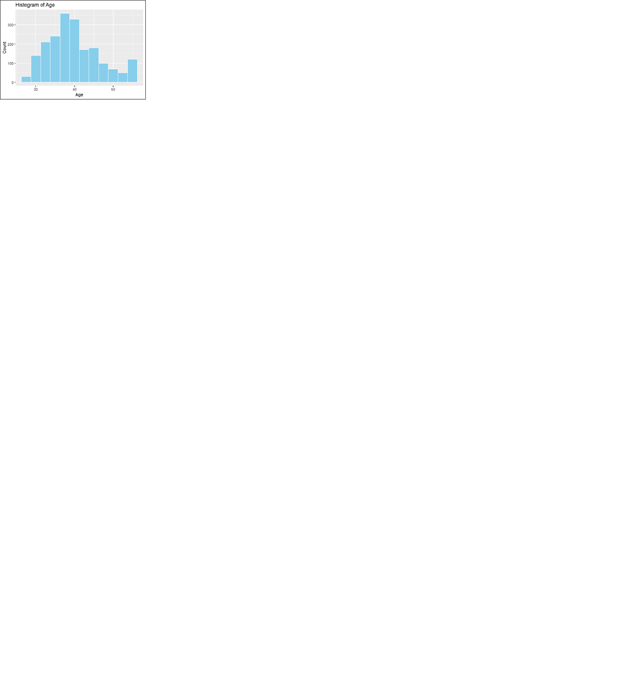
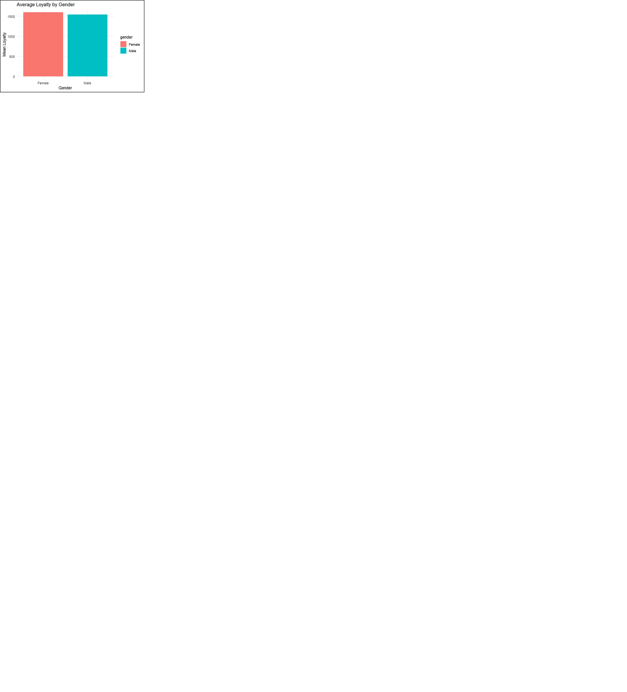
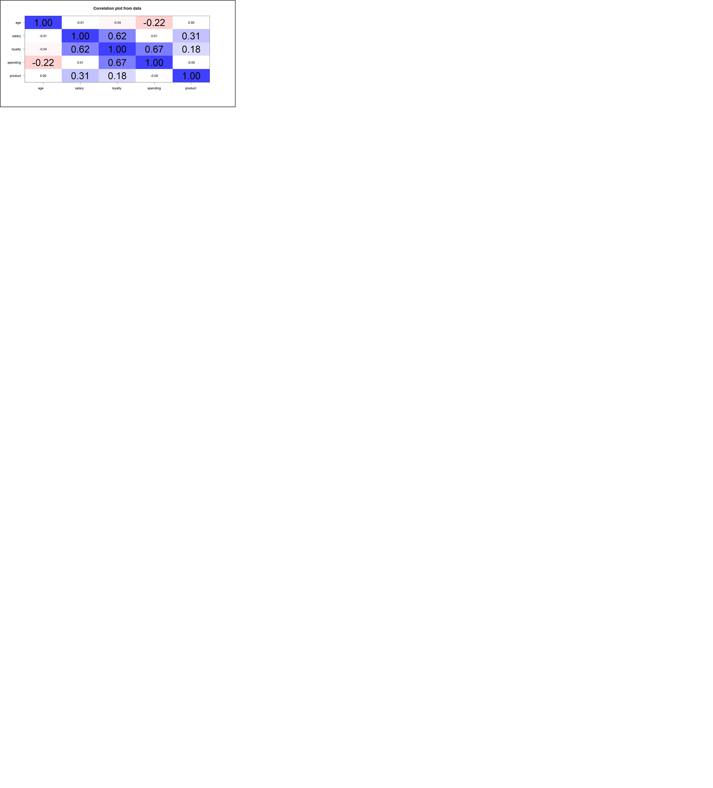
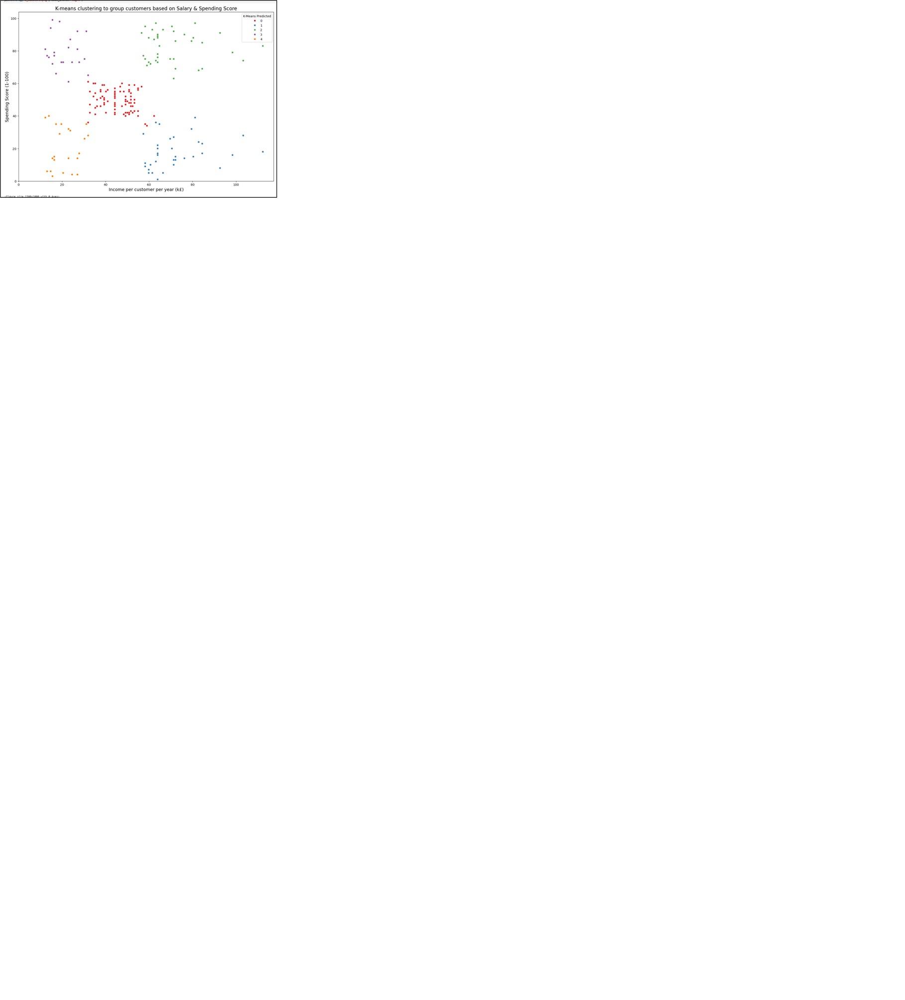
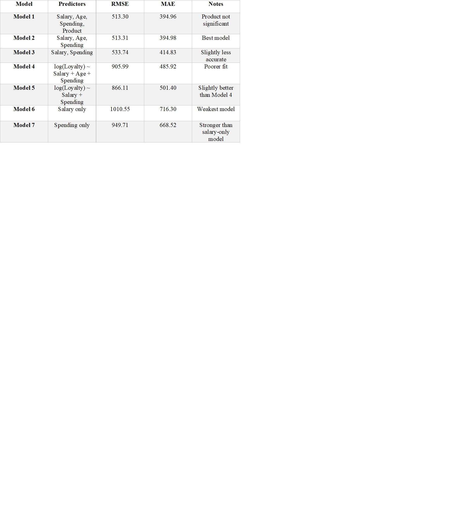
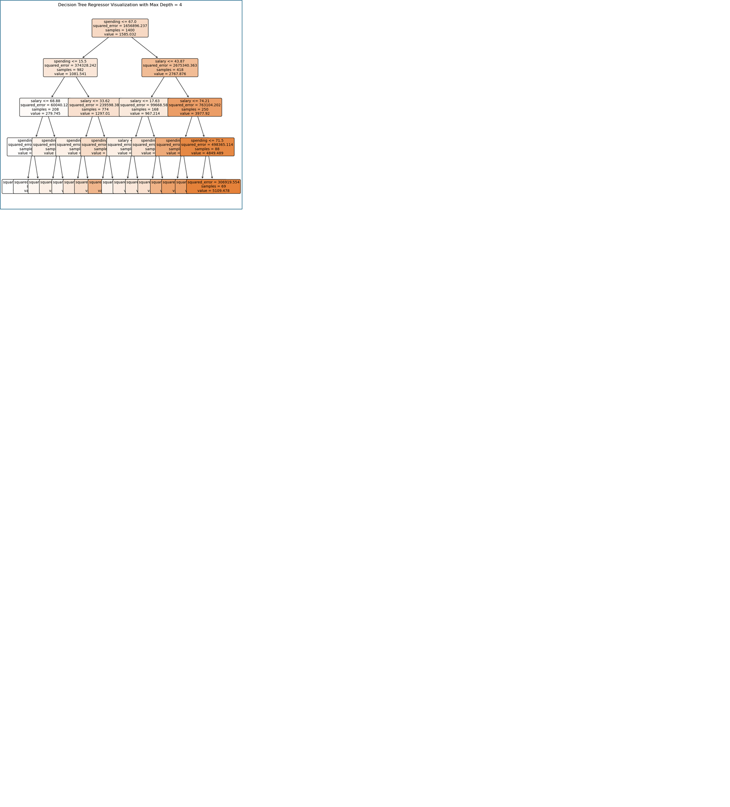
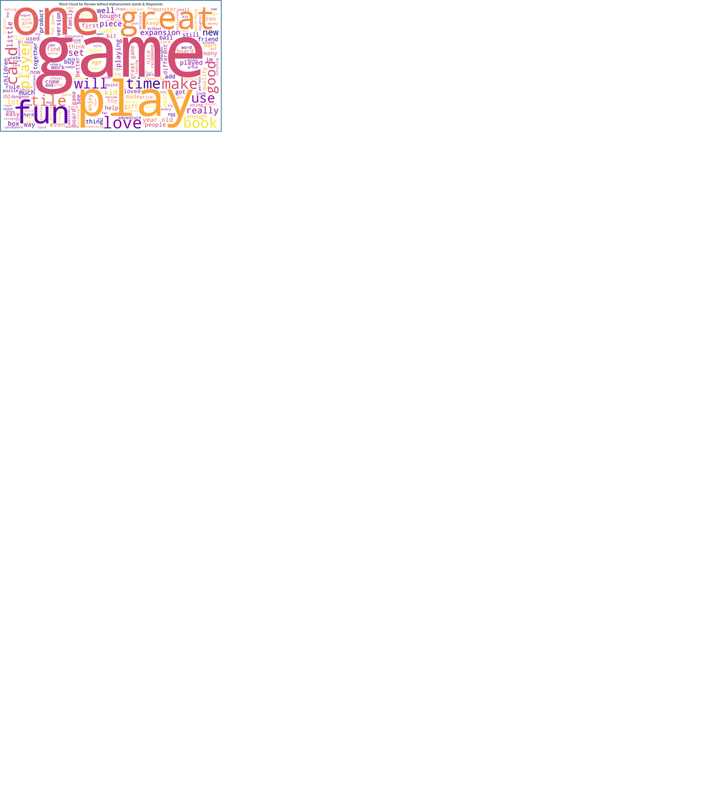

Turtle Games: Customer Analytics Project
Overview:
As part of the LSE Data Analytics Online Career Accelerator (Course 3: Advanced Analytics for Organisational Impact), this project explored how Turtle Games can use data to improve marketing, customer retention, and decision-making. The goal was to understand loyalty patterns, segment customer groups, and analyse sentiment from customer reviews.
I used Python and R to perform predictive modelling, clustering, and Natural Language Processing (NLP). Datasets were drawn from customer demographics, loyalty behaviour, and customers' reviews data.
For the analysis, I focused on:
- Predicting loyalty using salary, spending, age, and product interactions
- Building decision tree models to identify high-impact loyalty drivers
- Clustering customers into actionable market segments using K-Means
- Performing sentiment analysis on customers' review data using NLP
Based on the observations and insights, I was able to make the following recommendations:
- Target high-income, high-spending customers for premium loyalty programs
- Focus marketing on ages 32–34, the most loyal age group
- Engage low-spending, high-income customers with discounts or incentives
- Track product purchase frequency in future datasets for deeper insights
- Encourage detailed reviews to supplement positive but neutral review trends
Approach:
To answer Turtle Games’ key business questions, I applied a multi-method data analysis strategy combining both Python (Pandas, Scikit-learn, Matplotlib, Seaborn, TextBlob) and R. Key steps included:
- Data Cleaning & Preparation: Removed irrelevant variables, handled missing values, encoded categorical fields (like gender and education), and transformed skewed variables such as loyalty scores.
- Regression Modelling (R): Tested multiple linear models to predict loyalty points. The most accurate and interpretable model was the one with Salary + Age + Spending.
- Decision Tree Regression (Python): Built and pruned Decision Trees mRegressor models to visualise loyalty drivers. Spending and Salary emerged as the most influential predictors.
- K-Means Clustering: Segmented customers into 5 distinct groups based on income and spending behaviour to support targeted marketing.
- Sentiment Analysis: Used TextBlob to analyse the review text. Most reviews were neutral to positive, highlighting general satisfaction and areas to improve user experience.
Insights Summary:
- Loyalty peaks among customers aged 32–34, and those with high salary and spending. 
- Female and Basic-Education customers show slightly higher loyalty. 
- Spending and Salary are the strongest loyalty predictors; Product offers limited insight. 
- Five customer clusters are identified via K-Means segmentation, each with unique income–spending traits. 
Modelling Highlights
- Best regression model is the one with: Salary + Age + Spending (RMSE: 513, MAE: 395). 
- Top decision tree model was the one with Spending, Salary, Age (R²: 0.9961, MAE: 26). 
- Customers in Cluster 2 (high income & high spenders) are ideal for premium targeting.
Sentiment Insights
- Reviews are largely neutral to positive. Most common words are 'fun', 'game', 'great', and 'love'. 
- Negative reviews highlight usability issues, product quality and unclear instructions.
For a complete picture, feel free to look at my report. Click on the GitHub icon to see my complete Python and R codes.